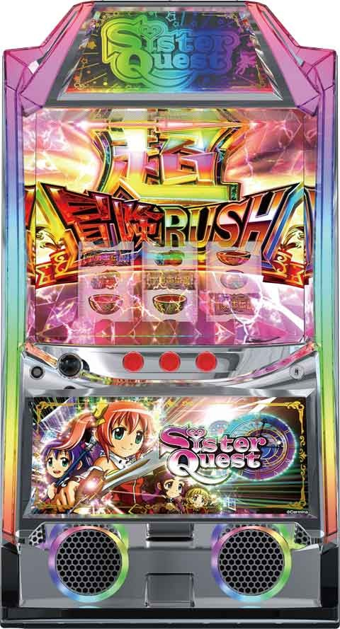
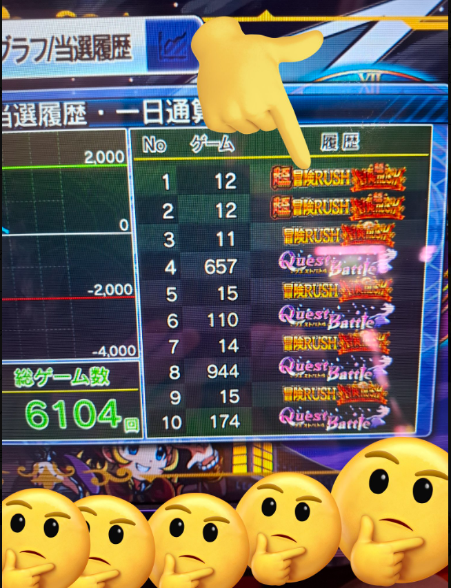
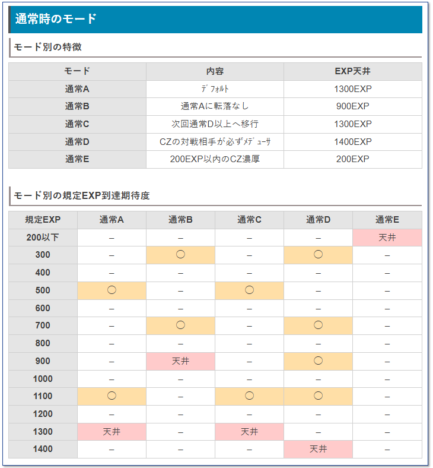
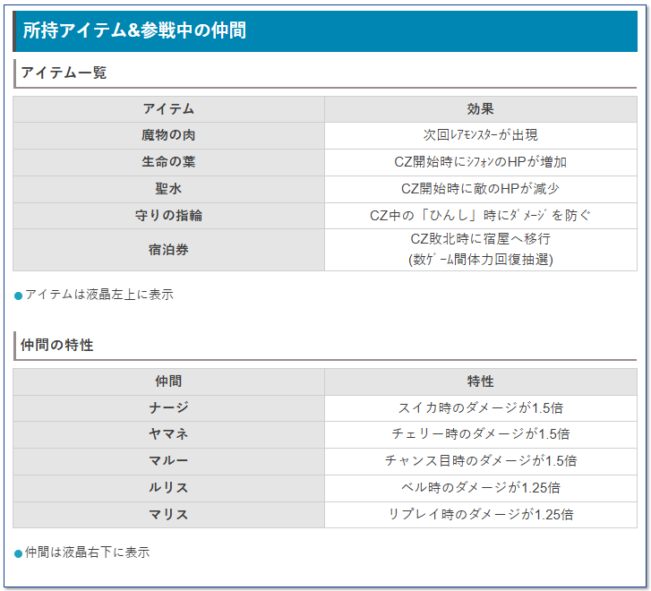

Lシスタークエスト

【天井情報】
CZ天井 EXPを最大1400＋αでCZに当選。
リセット時は500EXPに短縮。
CZスルー天井 CZを最大5回連続で失敗すると6回目のCZで必ずAT当選となる。
AT天井 通常時を最大2000G＋α消化するとATに当選。999Gの振り分けもあり。 リセット時は999Gに短縮。
【リセット判別】
目覚めの呪文画面終わりの台は据置だと翌日も目覚めの呪文画面スタート？
【有利区間について】
エンディング後など、有利区間がリセット(設定変更除く)されると赤背景の「目覚めの呪文」を経由して上位ATへ突入。
有利区間切れ条件
差枚+2200枚前後
差枚プラスでの上位AT突入で有利切れ。差枚マイナスの上位AT突入は有利切れてなさそう。
狙い目
【リセット狙い】
AT間 550Gから
CZ間（朝１回目のみ） 180EXPから
【AT間天井狙い】
1550Gから
【CZ間天井狙い】
EXPの進行具合は実ゲームに対して1.4倍くらい？
0スルー 700EXPから
1スルー以降 800EXPから
上位AT後はCZ当選まで（１回目のCZでAT当選するため）
【CZゾーン狙い】
・200EXPゾーン
前回210G以内AT当選かつAT終了後0スルー 50EXPから
２回連続0スルーで210G以内AT当選かつAT終了後0スルー 0EXPから
それ以降でAT当選かつ下位AT終了後0スルー 80EXPから
1スルー以降は前回当選Ｇ数に関わらず200EXP当選率が下がる 190EXPから
上位AT後は不問でCZ当選まで
※データ上、上位ATに行かなくてもループする事がありそう？またはループが続いてる方が狙える？
※アイテムや仲間キャラでボーダー調整出来る？平均でアイテム１個、キャラ２人くらい？
【アイテム、仲間狙い】
魔物の肉は不問で消費するまで
宿泊券はボーダー下げれそう
魔物の肉、宿泊券以外は強くない。アイテムや仲間が複数追加されていれば少しボーダー下げる程度
※例えば、AT後0スルー0EXPでも宿泊券あれば200EXPまでなど
【上位AT後狙いの押し引き】
上位AT後1回目のAT当選後 前回200ゾーンまでに当選の場合は0から200EXPゾーンまで。前回200ゾーン以降で当選時は30ptから200ゾーンまで。
上位AT後200EXPでのAT当選時 AT後0から200EXPゾーンまで。
やめ時は200EXPでCZ非当選時、200EXPでCZ当選AT非当選でやめ。
※上位AT後はループ性があると思われ、200EXPゾーンCZ当選→AT当選時は200EXPゾーン抜けまで必ず続行。
【CZスルー天井狙い】
４スルー500EXP手前くらいから
または５スルーから
【有利区間切れ狙い】
0スルー時 差枚+1500枚以上で200EXPゾーンまで
１スルー時 差枚+1900枚以上で200EXPゾーンまで
※有利切れすると上位AT突入。差枚プラス時の上位ATで有利切れすると思われる。
やめ時
AT終了後は目覚めの呪文抜け後やめ。緑文字は1つ目に出現しやすいため、1つ目だけ確認してやめ？
目覚めの呪文で緑セリフは200EXPゾーンまで。
上位AT後はCZ当選まで。
ゾーン狙い時のフェニックスゾーン（前兆演出）抜けた数G後に告知されるケースあり。
モードEループ中は特に欠損が大きいため、抜け後も3-5G回した方が良さそう。
その他
上位AT後の確認方法
メニュー画面から履歴で確認可能。（液晶右下のメニューから）
参考元 必勝期待値クマぱぱ

モード

所持アイテム、仲間の特性
ボーダー下げる要因にはなりそう
